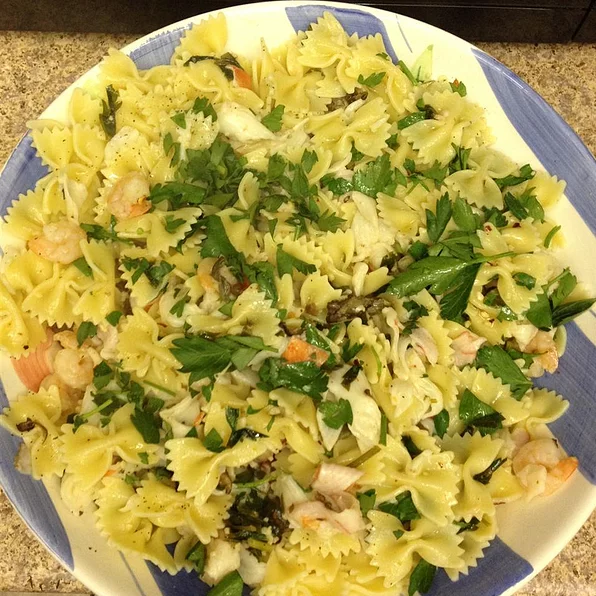

Pasta With Shrimp, Oysters, and Crabmeat

Mouthwatering Pasta!
Pasta with an addition of shrimp, oysters, and crabmeat.
Ingredients
- 1/2 cup butter
- 1/2 cup olive oil
- 3 tablespoons minced garlic
- 1 1/4 cups chopped fresh parsley
- 2 tablespoons fresh lemon juice
- 1 pinch crushed red pepper
- 1 (16 ounce) package bow tie pasta
- 2 (10 ounce) containers shucked small oysters, drained
- 1/4 cup butter
- 1 tablespoon olive oil
- 1 1/4 pounds peeled and deveined small shrimp
- 1 pound fresh lump crabmeat
- salt and pepper to taste
- 1/4 cup chopped fresh parsley
Steps
- Melt 1/2 cup butter and 1/2 cup olive oil together in a saucepan over medium heat. Stir in the garlic, and cook until fragrant, about 3 minutes.
Stir in the 1 1/4 cups of parsley, and cook for 1 minute more. Season with lemon juice, crushed red pepper, salt, and pepper; set aside.
- Bring a large pot of lightly salted water to a boil. Add pasta and cook for 8 to 10 minutes or until al dente; drain.
- Meanwhile, bring a few cups of water to a boil in a saucepan over high heat. Stir in the oysters and turn off the heat.
Allow the oysters to stand for 3 minutes, then drain and set aside. Melt 1/4 cup butter and 1 tablespoon olive oil together in a large skillet over
medium-high heat. Stir in the shrimp, and cook until they turn pink and begin to firm. Add the crab meat and drained oysters; continue cooking until
the shrimp have turned opaque in the center, and the crab is hot.
- Toss the seafood with the drained pasta, and season to taste with salt and pepper. Pour in the sauce, and toss gently to coat. Sprinkle with
remaining 1/4 cup of chopped parsley before serving.